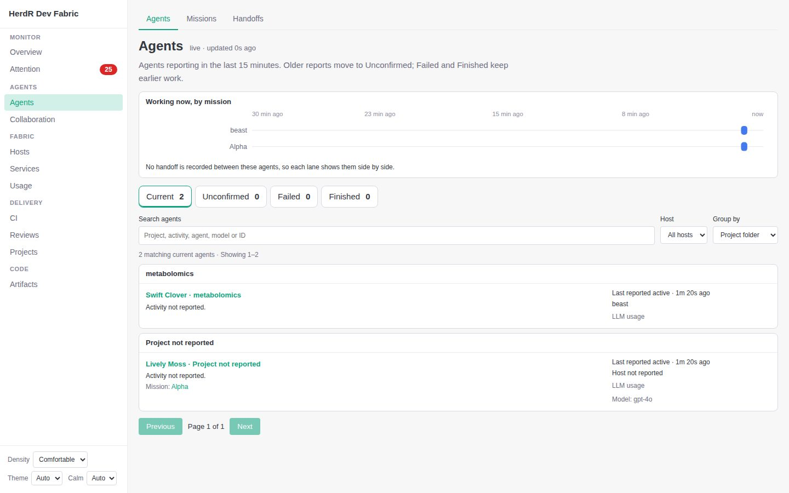
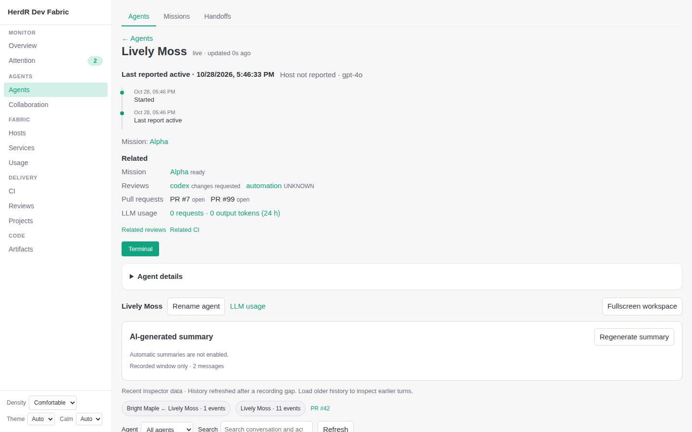
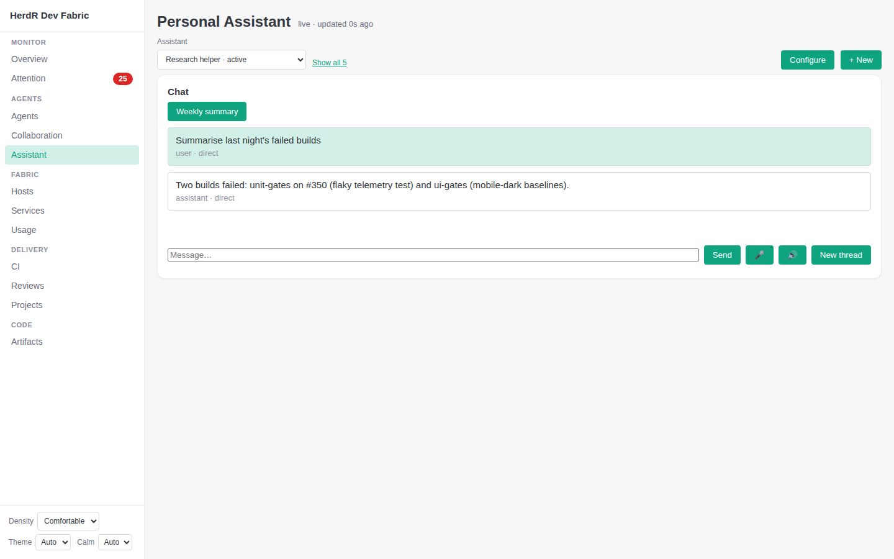
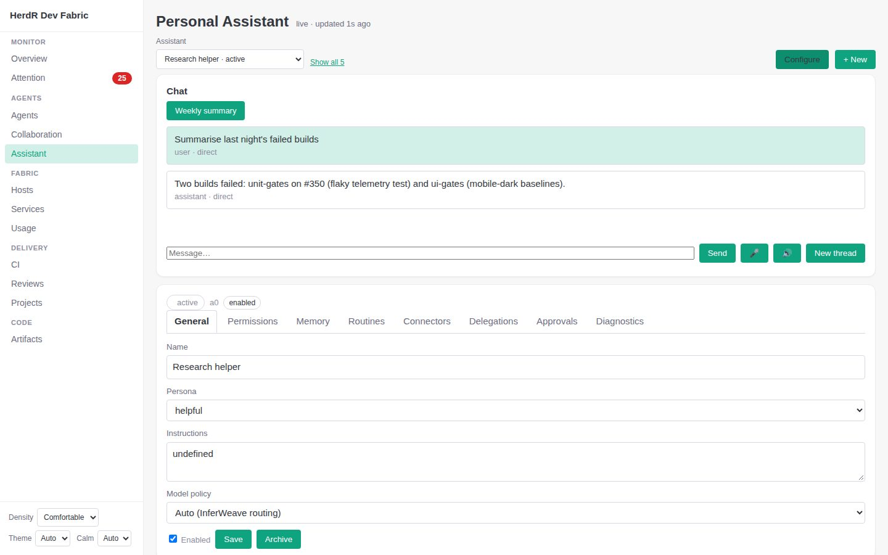

Agent-centric dashboard: what changed
Everything starts from agents: who is working, how they started, what was handed to whom. Pages that do not work are not listed. Shown with the repository's seeded test data, because production was not answering when these were taken.
Agents: the working ones, drawn by mission

One agent: how it started and proceeded

Assistant: chat first


Also changed
- Navigation: 25 entries became at most 14 in five groups (Monitor, Agents, Fabric, Delivery, Code); production shows 12 because Architecture and Project intelligence are switched off there. Missions and Handoffs are tabs of Agents, Scheduling of Hosts, Activity of Attention, Analytics of Usage. Topology is no longer listed (its address still works).
- Only what works: a page or tab whose backend answers 404/501, “not enabled” or “disabled” is marked, and a later success clears it. A marked tab leaves its tab strip; a sidebar entry disappears only when its own page and every tab of its section are marked. Detail pages (a missing mission, a missing host) never mark anything, and neither do timeouts. “Show unavailable (N)” lists everything again.
- Collaboration: Chat, Tasks, Agents and Lineage lead; Flow, Tabs, Attention, Progress, Workspaces, Proposals and People are quieter tabs (all still reachable). An idle Helpers panel is one line; “New room” folds once rooms exist.
Not done: Overview is unchanged; Usage merges LLM and Analytics only as tabs, not one page; the collaboration room has not been viewed against a live server in this pass; the chat conversation composer's 13-button toolbar is untouched. Handoff data in production was empty (0 edges), so arrows appear only once handoffs exist.